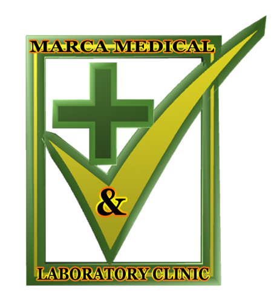

 Marca Medical and Laboratory Clinic Inc. is a medical center used to treat sick people, deliver Pregnant women, and sell drugs to the general public. Therefore the site will be used to public the activates of the clinic online for awareness. this project carries on awareness about the clinic and what it has to offer. ANS: the short term marketing goal of the company is publish a website that captivates as many patients. For the long term, we intend to setup multiple social Media pages to extend our outreach to the public.
The major products of the project To describe our services are: Affordability, morality, diversity, customs e.t.c.
- To carry on awareness to the general public about the clinic, on the internet
- To market quality drugs that the clinic offer, to the general public on the internet
- To make sure that all those who seek treatment at the clinic life are save
Facebook Google Plus Twitter